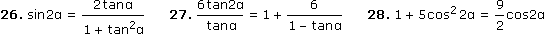

Ergebnisse:
1. 1/|cosα|
2. 1
3. sinα
4. sinα + cosα
5. 1 – sinα
6. cosα – sinα
7. 1/cos2α
8. 1/sinα
9. 1 + cosα
10. |sinα|
11. cosβ/sinα
12. tan2α
13. { 85,57°; 348,17° }
14. { 0°, 45°, 135°, 180°, 225°, 315° }
15. { 30°, 150°, 270° }
16. { 0°, 60°, 180°, 300° }
17. { 0°, 180° }
18. { 0°; 111,47°; 180°; 248,53° }
19. { 60°, 180°, 300° }
20. { 60°; 138,59°; 221,41°; 300° }
21. { 45°, 225° }
22. { 22,26°; 270° }
23. { 37,98°; 127,98°; 217,98°; 307,98° }
24. { 30°, 150° }
25. { 56,31°; 141,34°; 236,31°; 321,34° }
26. G\{90°, 270°}
27. { 78,69°; 258,69° }
28. { 30°; 33,21°; 146,79°; 150°; 210°; 213,21°; 326,79°; 330° }